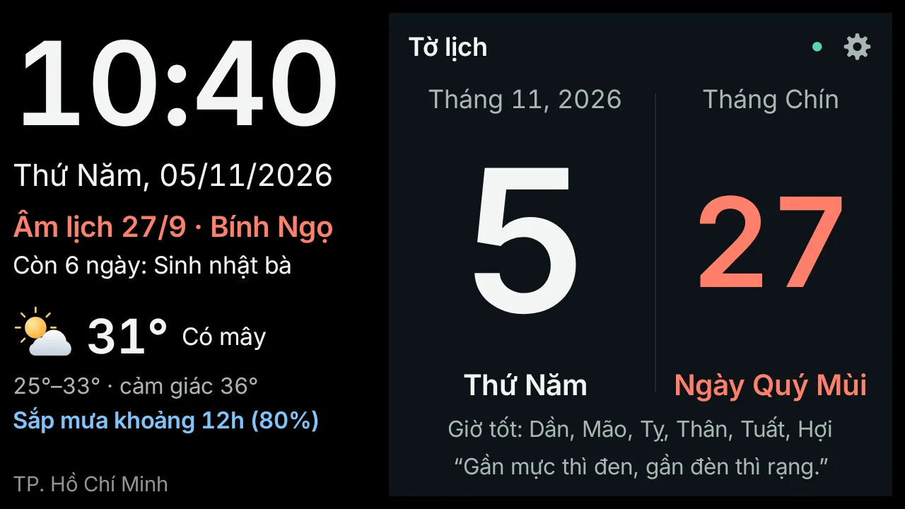
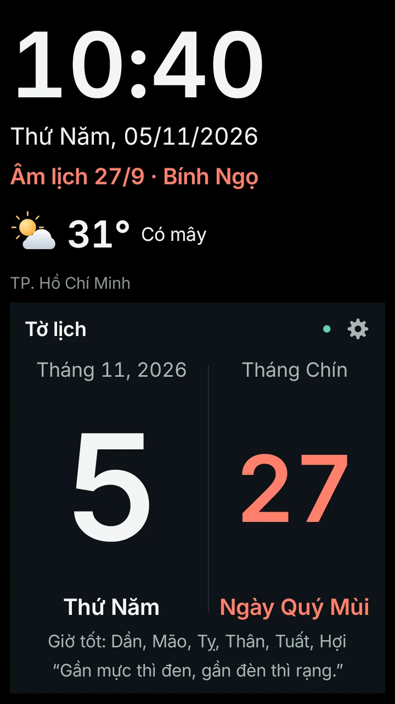
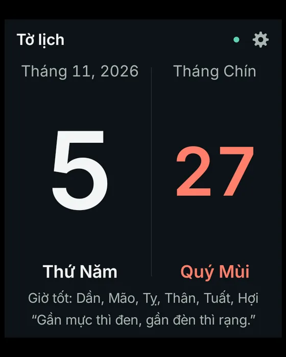
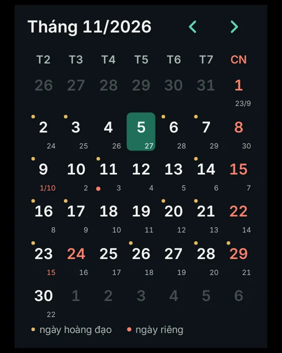
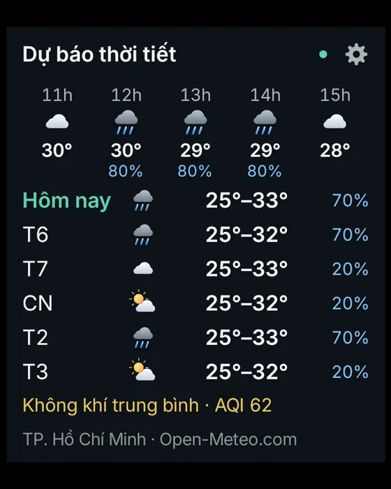
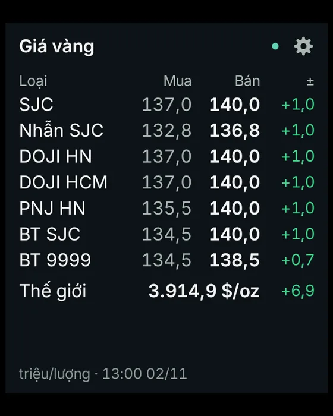
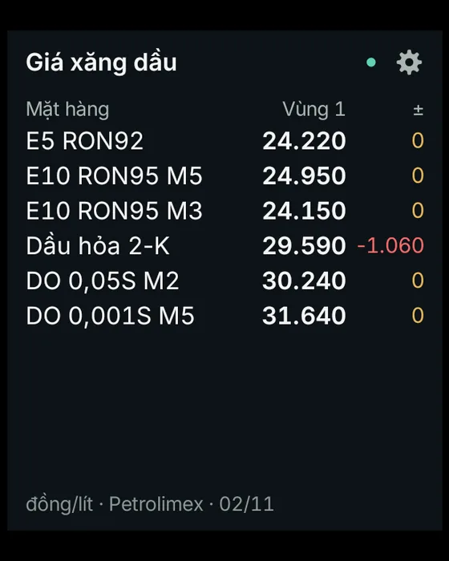
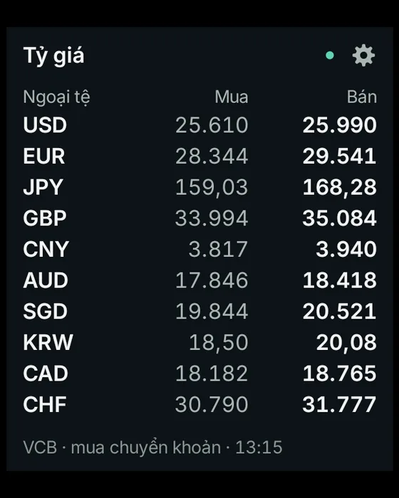
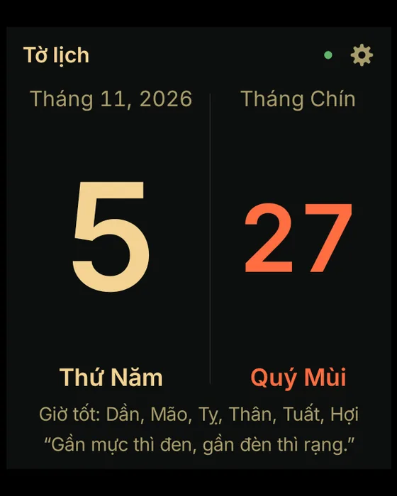
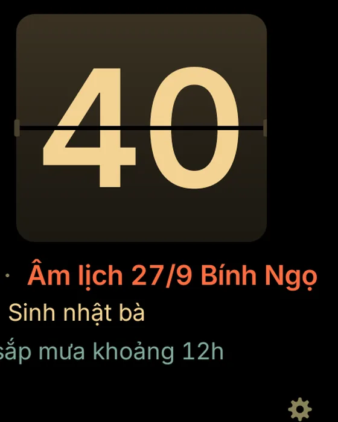

Lịch treo tường từ điện thoại cũ
Nhật Nguyệt biến chiếc Android cũ thành tấm lịch: đồng hồ lớn, âm dương lịch, nhắc ngày giỗ, thời tiết và giá vàng. Miễn phí, không quảng cáo.

Vừa mọi màn hình
Từ máy 3,5 inch đời đầu đến điện thoại 6,7 inch, bố cục tự xếp lại cho vừa. Chọn bảng lịch nhiều thông tin hoặc đồng hồ lật chữ lớn.
Chọn cỡ gần nhất với chiếc máy bạn định treo lên tường.
Một tờ lịch đủ đầy
Dương lịch và âm lịch
Thứ, ngày tháng, ngày âm và năm can chi, tính theo giờ Việt Nam.
Thời tiết nơi nhà mình
Nhiệt độ, trời, báo sắp mưa trong ba giờ tới, dự báo sáu ngày.

Giờ to, nhìn từ xa
Chữ số chiếm gần hết bề ngang, đọc được từ đầu kia căn phòng.
Tờ lịch như lịch bloc
Ngày dương thật lớn, ngày âm đỏ son; ngày được nghỉ theo luật cũng tô đỏ.
Ngày can chi, giờ tốt
Ngày hoàng đạo hay hắc đạo và các giờ hoàng đạo trong ngày.
Mỗi ngày một câu ca dao
Ba mươi hai câu tục ngữ quen thuộc, đổi theo ngày.
Các trang trên bảng lịch
Mỗi trang hiện 20 giây rồi chuyển sang trang kế; bật hay tắt từng trang trong Cài đặt. Ngoài các trang dưới đây còn chứng khoán và tin tức từ các báo.
-

Âm lịchCan chiGiờ tốtCa daoTờ lịch -

Ngày âmNgày nghỉHoàng đạoNgày giỗLịch tháng -

Theo giờ6 ngàyAQIBáo mưaDự báo thời tiết -

SJCDOJIPNJBảo TínGiá vàng -

E5RON95Dầu DODầu hỏaGiá xăng dầu -

USDEURJPYCNYTỷ giá -

Tông ấmGiảm sángTắt mànTự bật lạiBan đêm -

GiờNgày âmThời tiếtNgày giỗĐồng hồ lật
Cài trong năm phút
-
Tải tệp APK về chính chiếc máy sẽ treo.
Mở trang này trên điện thoại đó, bấm Tải APK. Tệp nặng khoảng 4 MB; trình duyệt có thể hỏi lại vì đây là tệp cài đặt.
-
Rồi cho phép cài ứng dụng từ trình duyệt.
Lần đầu, Android hỏi có cho phép cài từ nguồn này không: bật Cho phép. Máy Android 7 trở về trước: Cài đặt › Bảo mật › bật Không rõ nguồn gốc.
-
Cuối cùng chọn nơi ở, cắm sạc, đặt nằm ngang.
Mở app, nhập thành phố để thời tiết đúng chỗ, rồi cấp quyền tắt màn ban đêm nếu muốn đỡ tốn pin. Giữ lâu vào đồng hồ để mở Cài đặt.
Hỏi đáp
Máy nào dùng được?
Điện thoại hoặc máy tính bảng Android 4.0.3 trở lên, màn hình từ 3,5 inch. App chạy toàn màn hình, nằm ngang hay dựng đứng đều được. Máy càng cũ càng nên bật Tiết kiệm pin trong Cài đặt.
Có mất tiền, có quảng cáo không?
Không. App miễn phí, không quảng cáo, không cần tài khoản. Mã nguồn mở theo giấy phép Apache 2.0, ai cũng xem và tự build được.
Dữ liệu lấy từ đâu?
App lấy thẳng từ nguồn công khai, không qua máy chủ trung gian: thời tiết và không khí từ Open-Meteo, giá vàng từ vang.today, giá xăng Petrolimex qua giaxanghomnay.com, tỷ giá Vietcombank, chứng khoán DNSE và tin tức từ RSS các báo.
Âm lịch tính ngay trên máy theo thuật toán của Hồ Ngọc Đức nên không cần mạng. Mất mạng thì app vẫn hiện dữ liệu lần gần nhất.
Ngày nào được tô đỏ?
Chủ nhật và những ngày người lao động được nghỉ hưởng nguyên lương: ngày lễ theo Điều 112 Bộ luật Lao động 2019, Ngày Văn hóa Việt Nam 24/11 (Nghị quyết 28/2026/QH16), nghỉ bù khi lễ trùng cuối tuần, cùng lịch nghỉ Tết và Quốc khánh của khối nhà nước đã công bố cho 2026 và 2027.
Ngày kỷ niệm như 8/3, 20/11 hay Trung thu chỉ ghi tên, không tô đỏ.
Nhắc ngày giỗ thế nào?
Vào Cài đặt › Ngày giỗ, thêm từng ngày, ví dụ “15/8 âm Giỗ ông nội” hay “20/11 Sinh nhật mẹ”. Bảng lịch nhắc trước 7 ngày, tờ lịch ghi tên đúng hôm đó, lịch tháng có chấm đỏ. Ngày 30 âm rơi vào tháng thiếu thì tính ngày 29.
Cắm sạc suốt ngày có sao không?
App hạn chế hao pin và nóng máy: ban đêm tắt màn khi không ai chạm, tự giảm sáng khi pin từ 42°C hoặc còn dưới 20% lúc không sạc, chế độ Tiết kiệm pin gom việc tải dữ liệu 30 phút một lần. Cài đặt có thống kê pin hao bao nhiêu mỗi giờ và nóng nhất bao nhiêu độ.
Android không cho ứng dụng tự ngắt sạc; muốn giữ pin trong khoảng 40–80% thì dùng ổ cắm hẹn giờ.
App có tự cập nhật không?
Có, với bản tải ở trang này. Khi có bản mới, dòng dưới cùng của bảng lịch báo “Có bản mới · chạm để cài”. App kiểm tra mã SHA-256 của tệp tải về, và Android chỉ cho cài đè bản có cùng chữ ký.
App xin những quyền gì?
Mạng để tải dữ liệu; vị trí gần đúng chỉ khi bạn bấm “Dùng vị trí hiện tại”; quản trị thiết bị nếu muốn ban đêm tắt hẳn màn hình (chỉ dùng để tắt màn); hiện trên ứng dụng khác, từ Android 10, để sáng ra tự bật lại.
App không thu thập hay gửi dữ liệu cá nhân đi đâu. Xem chính sách quyền riêng tư.